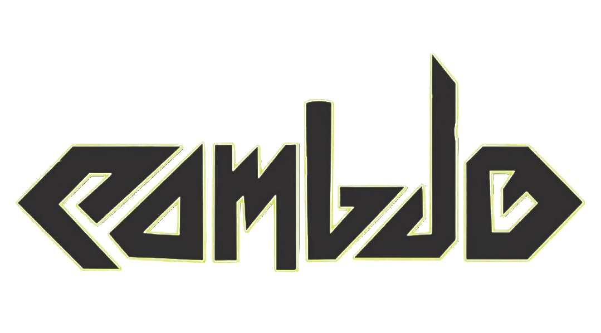

unleashing raw rave energy and euphoric chaos
Nalu Portello, mais conhecida como DJ RAMBDA, tem raízes no pós-punk e EBM e sua formação atravessa influências que vão do nightcore, hardstyle e hardcore ao drum'n'bass, sempre filtradas por uma sensibilidade que molda sua estética única. Seu projeto une múltiplas referências das subculturas eletrônicas e tem uma identidade sonora própria, sempre voltada para uma estética oldschool crua, pesada e eufórica. Intensa e profundamente conectada à cultura rave.
DJ RAMBDA é uma exploradora sonora que transforma pistas em estados de euforia máxima, cruzando caos rave e intensidade pura com influências do underground gótico, hardstyle e drum’n’bass. Seu som mistura trance techno, tekkno, donk, hardbass, breakbeat e elementos do hardcore em sets hiperativos, explosivos e guiados por uma estética digital crua e futurista.
Com raízes no pós-punk, EBM e nas subculturas eletrônicas da internet, Nalu Portello — o nome por trás de RAMBDA — traz para as pistas sua trajetória entre mundos digitais, ruídos, glitchs e atmosferas noturnas. Estreando oficialmente em 2025, já passou por espaços como Netão, Casa Abe e Tarot Club etc, além de colaborar com eventos independentes e festas de nicho. Seu repertório navega entre rolês góticos, noites techno e encontros bass/drum’n’bass, sempre tensionando as fronteiras entre o underground e o virtual.
RAMBDA é marcada por uma identidade sonora e visual própria: intensa, eufórica, hiperativa e profundamente conectada à cultura rave.